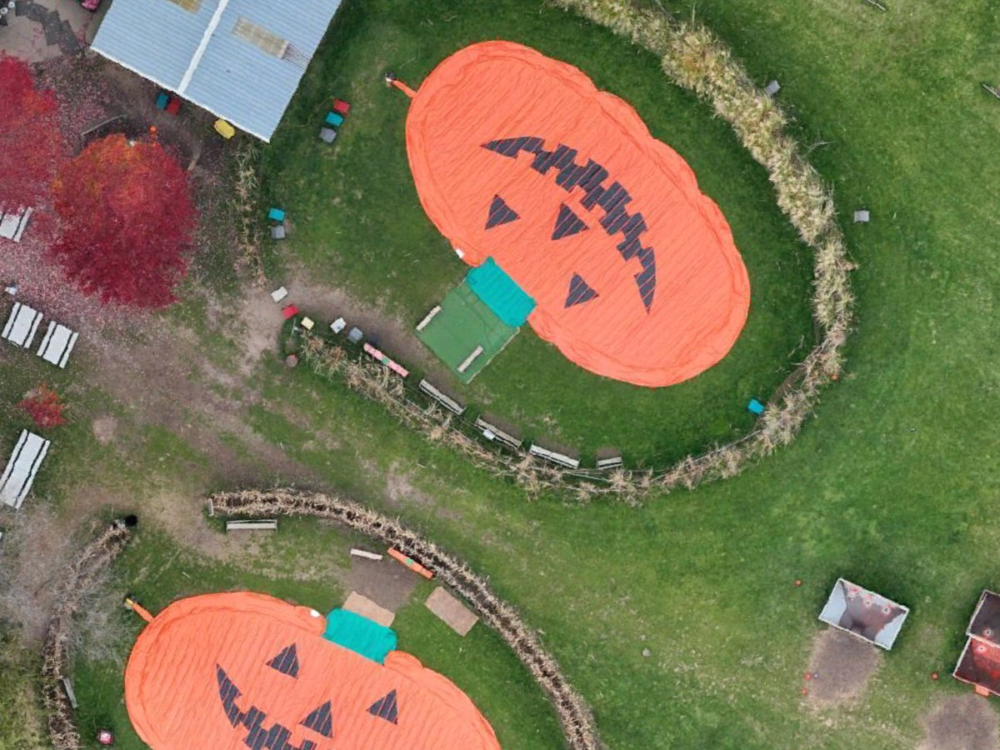
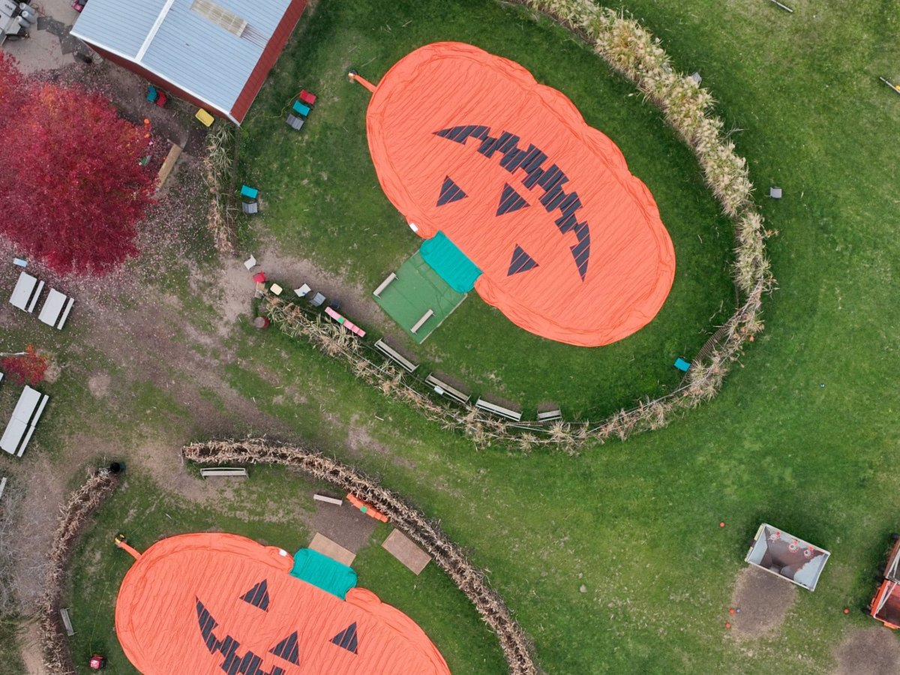

field notes ·
How Much Does Drone Mapping Cost? Pricing, Deliverables, and What Affects Your Quote
(and what all those letters mean – tap the circled ones)
If you're budgeting for a drone mapping project, you've probably noticed that nobody wants to give you a number. Here's the short answer: most professional projects in the U.S. land somewhere between a few hundred dollars and a few thousand. Where yours lands depends on the size of the site, what you need delivered, and how accurate it has to be.
That range is wide on purpose. Two sites with the same acreage can be priced very differently, and the small one isn't always the cheap one. Below, we break down what the market charges, what actually moves a quote, and what a complete mapping package should include, so you can compare providers on more than the bottom line.
Typical Drone Mapping Costs at a Glance
Fair warning first: the ranges below come from published 2026 pricing guides by industry pricing-data sites, software companies, and training providers, including one with Wisconsin-specific figures. None is an independent survey of what clients actually paid, and the sources don't always agree, so treat these as planning ranges, not quotes. They are not a Novak|GS rate card; every project is quoted individually.
| Project type | Published range | Refs |
|---|---|---|
| Small site, basic orthomosaic | $400–$800 project minimum | 2, 4 |
| Orthomosaic on a Wisconsin site under about 50 acres | $950–$3,400 per project | 1 |
| Per-acre rate, 2D orthomosaic only (no ground control) | $5–$20 per acre | 2, 3 |
| 3D model or point cloud | About $150–$800 more per project for a basic model; full 3D deliverables run about $15–$30 per acre | 2, 4 |
| Construction progress visit (photos and video, not mapping) | About $200–$1,200 per visit | 1, 4 |
One guide puts orthomosaics at $50–$150 per acre, well above everyone else, so take that one with a grain of salt [4].
The per-acre rates cover a basic visual map only. The Wisconsin figure is for a complete processed project, which is why it runs higher. Either way, nearly every provider has a project minimum, and per-acre pricing drops as sites get bigger. The next section explains why.
Why Acreage Alone Doesn't Set the Price
Acreage is the first thing everyone asks about, and it's only part of the story. A 5-acre lot isn't 1/20th the cost of a 100-acre site, because a lot of the work happens before the drone leaves the ground and after it lands:
- Mobilization and travel. Getting a pilot, aircraft, and field gear to the site costs the same whether the flight takes 10 minutes or 2 hours.
- Flight planning and airspace. Every job needs a site assessment, weather review, NOTAM and TFR checks, and airspace authorization where required.
- Ground control and verification. Setting and measuring targets takes field time, and that time scales with the accuracy you need, not with acreage alone.
- Processing. Large sites generate thousands of images. Our Enchanted Valley reconstruction, 9,578 photos covering 110.5 acres, ran 38 straight hours on our workstation. We started it on a Friday night, it finished Sunday morning, and quality control hadn't even started yet.
- Terrain and vegetation. Steep ground, tree canopy, water, and structures all affect flight design, overlap, and how much cleanup the elevation data needs.
- Deliverables and turnaround. An orthomosaic alone is a lighter lift than an orthomosaic plus elevation model, contours, volumes, and a 3D model. Rush delivery costs more everywhere.
- Frequency. Recurring flights on a set schedule, such as monthly construction progress, are usually priced lower per visit than one-time jobs.
Bottom line: a small site that needs a detailed 3D model and verified elevations can cost more than a much bigger site that only needs a basic orthomosaic.
Aerial Photos vs. Orthomosaics vs. 3D Models
These three get lumped together a lot, but they're different products with different price tags.
Aerial photographs are individual images composed for viewing: marketing, documentation, and progress records. They're priced like photography, by session or by edited image. They look great, but on their own they don't provide reliable map-scale measurements.
Orthomosaics are hundreds or thousands of overlapping images stitched into a single, geometrically corrected map. Distortion from camera angle and terrain is corrected, so distances and areas can be measured within the map's verified accuracy. A properly georeferenced orthomosaic drops into GIS, CAD, or Google Earth in its correct real-world position.


Raw photoOrthomosaic3D models and elevation products add the vertical dimension: point clouds, surface models, contours, and textured 3D meshes. They support volume calculations, drainage review, cut/fill analysis, and fly-thru visualization. They often draw on oblique (angled) imagery for structures and vertical features. Capturing that imagery is quick; processing it is what adds cost, because reconstructing a 3D surface takes far more computing time and cleanup than a flat map. Photogrammetry measures only what the camera can see, so ground elevations under dense vegetation are estimated, not measured.
How RTK and Ground Control Affect Accuracy and Price
A map can look sharp and still be in the wrong place. Accuracy comes from positioning, and that's where much of the price difference between providers hides.
RTK (real-time kinematic) positioning corrects the aircraft's GPS in real time using a reference network, tightening the position of every image. In Wisconsin, the statewide WISCORS network makes RTK practical across most of the state.
Ground control points (GCPs) are targets placed on the site and measured with a GNSS rover. They tie the map to real-world coordinates during processing.
Checkpoints are measured the same way but held out of processing. Comparing the finished map against them shows how accurate the deliverable actually is, rather than how accurate it should be. RTK alone doesn't guarantee accuracy; the ASPRS positional accuracy standards, which USGS has adopted, judge the finished data, not the equipment that produced it.
Each step adds field time and cost, and not every project needs all of them: a marketing orthomosaic may need RTK alone, while stockpile volumes or cut/fill comparisons call for ground control and independent checks. We'll tell you which ones your job actually needs. Novak|GS documents the accuracy checks performed on every mapping project and delivers that quality-control record with the data, so you know exactly what you're relying on.
What You Actually Get for the Price
This is where providers differ most, and where quotes get hard to compare. Before you sign anything, ask exactly what files you'll get and in what formats.
To show what a complete package looks like, here's our 110.5-acre mapping project at Enchanted Valley Acres, a Christmas tree farm and agritourism property in Cross Plains, Wisconsin. The site spans open fields, attractions, a pond, and a ridge separating the lower farm from the upper tree plantation, which makes it a useful example of how real-world terrain shapes a mapping job.
A Novak|GS mapping deliverable is organized by who opens it and with what:
- Maps and PDFs for owners and managers: print-ready 11x17 map sheets that open on any device.
- Google Earth files for quick, intuitive viewing of the site in context.
- GIS and CAD data for engineers and designers: georeferenced orthomosaic, elevation model, contours, and supporting data.
- A read-me and quality-control record explaining the coordinate system, the accuracy checks performed, and how to use each file.
Every file is numbered so the package sorts in a logical order, and the raw imagery is archived. We also fly obliques on every mapping job, whether or not the quote includes a 3D product. Taking them adds little time on site, and having them on file means a client who later wants a 3D model often won't need a second flight, though a more demanding model may still call for one.
Want to know how many trees are in that block? We can count those too. For the full breakdown of the flights, processing, and deliverables, see the Enchanted Valley case study.
When Drone Mapping Makes Sense and When You Need a Licensed Surveyor
Drone mapping is a strong fit for:
- Construction progress documentation and recurring site monitoring
- Stockpile volumes and cut/fill comparisons between flights
- Site planning, drainage review, and pre-development visualization
- Land management, timber and tree inventories, and agricultural planning
- Real estate marketing and 3D fly-thru visualization
In Wisconsin, a licensed land surveyor is required for:
- Property boundaries, corners, and legal descriptions
- Plats, certified surveys, and anything recorded with the county
- Certified topographic surveys required for permitting or engineering design
- Construction staking and layout
That line comes from Wisconsin law, which defines the practice of land surveying in Chapter 443 of the state statutes [8]. Other states draw it differently, so if your project is outside Wisconsin, check that state's rules. Drainage, cut/fill, and volume products from drone mapping are planning and documentation data, not engineering design or construction-control data. We like surveyors; we just aren't one. Novak|GS does not provide land surveying services. Our mapping data is designed to support planning, monitoring, and measurement, and it can complement a surveyor's work, but it doesn't replace a licensed survey where one is required.
Questions to Ask Before You Hire a Drone Mapping Provider
- What deliverables are included, and in what file formats?
- How is accuracy verified, and will I receive the results?
- What coordinate system will the data be delivered in?
- Who owns the data, and how long is it retained?
- What's the turnaround time from flight to delivery?
- Is the pilot FAA Part 107 certified and insured for commercial work?
If a provider can answer these without hedging, that's a good sign their pricing is straight with you too.
Frequently Asked Questions
Request a Drone Mapping Quote in Southern Wisconsin
Novak|GS serves Dane County and surrounding counties, the Fox Valley, and the greater Milwaukee area. To get an accurate quote quickly, send us:
- The site location or parcel
- Approximate acreage
- The deliverables you need, or the problem you're trying to solve
- Any accuracy requirements
- Your timeline, and whether this is a one-time or recurring project
Email info@novakgs.com or call or text 608-820-0224. Not sure which deliverables you need? That's normal. Tell us what decision the data has to support, and we'll recommend the right package.
Elevated Data|Grounded Truth
Novak|GS · novakgs.com
Sources
Pricing sources (1–4) and technical and regulatory references (5–8), checked November 14, 2026:
- Rotor Rate — Wisconsin Drone Services Pricing Guide (2026)
- SkyeBrowse — Drone Photography Cost: Pricing Breakdown for 2026
- The Drone U — Drone Service Pricing Guide: How Much Drone Services Cost in 2026
- Rotate Pilot — Drone Photography Pricing Guide 2026
- ASPRS — Positional Accuracy Standards for Digital Geospatial Data
- U.S. Geological Survey — Adopt Updated Accuracy Standards
- Wisconsin Department of Safety and Professional Services — Land Surveyor, Professional
- Wisconsin Statutes, Chapter 443 — s. 443.01(6s), "Practice of professional land surveying"